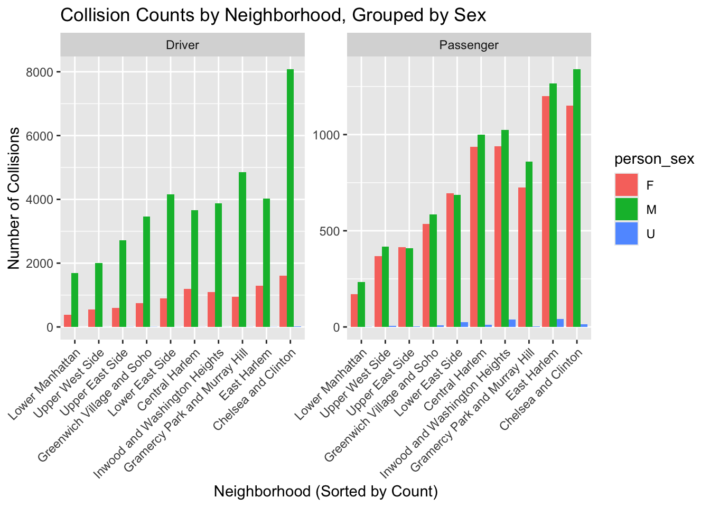

Non_Temporal
library(tidyverse)geo_df <- read.csv("data/Zip Codes.csv") |>
janitor::clean_names() |>
select(zip_code, county, neighborhood)
collision_df <- read.csv("data/collision_df.csv") |>
janitor::clean_names()collision_geo_df <-
collision_df |>
left_join(geo_df, by = "zip_code") |>
select(-vehicle_year, -driver_license_jurisdiction) |>
drop_na()# Type
collision_geo_df |>
count(person_type, name = "number") |>
mutate(prop = number / base::sum(number))## person_type number prop
## 1 Bicyclist 3186 0.05058668
## 2 Occupant 59067 0.93785427
## 3 Other Motorized 728 0.01155904# Age
collision_geo_df |>
count(person_age, name = "number") |>
mutate(prop = number / base::sum(number)) ## person_age number prop
## 1 -971 1 1.587780e-05
## 2 -966 1 1.587780e-05
## 3 -961 1 1.587780e-05
## 4 -960 1 1.587780e-05
## 5 -959 1 1.587780e-05
## 6 -958 1 1.587780e-05
## 7 -797 2 3.175561e-05
## 8 -751 1 1.587780e-05
## 9 -599 1 1.587780e-05
## 10 -597 1 1.587780e-05
## 11 -596 3 4.763341e-05
## 12 -595 4 6.351122e-05
## 13 -593 2 3.175561e-05
## 14 -591 1 1.587780e-05
## 15 0 125 1.984726e-03
## 16 1 153 2.429304e-03
## 17 2 122 1.937092e-03
## 18 3 149 2.365793e-03
## 19 4 208 3.302583e-03
## 20 5 180 2.858005e-03
## 21 6 182 2.889760e-03
## 22 7 201 3.191439e-03
## 23 8 192 3.048538e-03
## 24 9 245 3.890062e-03
## 25 10 227 3.604262e-03
## 26 11 180 2.858005e-03
## 27 12 145 2.302282e-03
## 28 13 149 2.365793e-03
## 29 14 145 2.302282e-03
## 30 15 136 2.159381e-03
## 31 16 171 2.715105e-03
## 32 17 229 3.636017e-03
## 33 18 386 6.128833e-03
## 34 19 503 7.986536e-03
## 35 20 699 1.109859e-02
## 36 21 875 1.389308e-02
## 37 22 1153 1.830711e-02
## 38 23 1371 2.176847e-02
## 39 24 1471 2.335625e-02
## 40 25 1651 2.621426e-02
## 41 26 1647 2.615074e-02
## 42 27 1697 2.694463e-02
## 43 28 1699 2.697639e-02
## 44 29 1703 2.703990e-02
## 45 30 1940 3.080294e-02
## 46 31 1746 2.772265e-02
## 47 32 1811 2.875470e-02
## 48 33 1725 2.738921e-02
## 49 34 1690 2.683349e-02
## 50 35 1662 2.638891e-02
## 51 36 1627 2.583319e-02
## 52 37 1607 2.551563e-02
## 53 38 1445 2.294343e-02
## 54 39 1475 2.341976e-02
## 55 40 1366 2.168908e-02
## 56 41 1283 2.037122e-02
## 57 42 1232 1.956146e-02
## 58 43 1241 1.970436e-02
## 59 44 1195 1.897398e-02
## 60 45 1184 1.879932e-02
## 61 46 1133 1.798955e-02
## 62 47 1113 1.767200e-02
## 63 48 1050 1.667169e-02
## 64 49 936 1.486162e-02
## 65 50 971 1.541735e-02
## 66 51 926 1.470285e-02
## 67 52 949 1.506804e-02
## 68 53 951 1.509979e-02
## 69 54 951 1.509979e-02
## 70 55 958 1.521094e-02
## 71 56 879 1.395659e-02
## 72 57 898 1.425827e-02
## 73 58 906 1.438529e-02
## 74 59 832 1.321033e-02
## 75 60 803 1.274988e-02
## 76 61 703 1.116210e-02
## 77 62 697 1.106683e-02
## 78 63 593 9.415538e-03
## 79 64 556 8.828059e-03
## 80 65 523 8.304092e-03
## 81 66 456 7.240279e-03
## 82 67 381 6.049443e-03
## 83 68 383 6.081199e-03
## 84 69 264 4.191740e-03
## 85 70 266 4.223496e-03
## 86 71 229 3.636017e-03
## 87 72 210 3.334339e-03
## 88 73 160 2.540449e-03
## 89 74 153 2.429304e-03
## 90 75 142 2.254648e-03
## 91 76 115 1.825948e-03
## 92 77 99 1.571903e-03
## 93 78 79 1.254347e-03
## 94 79 74 1.174958e-03
## 95 80 60 9.526683e-04
## 96 81 55 8.732792e-04
## 97 82 53 8.415236e-04
## 98 83 43 6.827456e-04
## 99 84 29 4.604563e-04
## 100 85 23 3.651895e-04
## 101 86 31 4.922119e-04
## 102 87 17 2.699227e-04
## 103 88 14 2.222893e-04
## 104 89 12 1.905337e-04
## 105 90 8 1.270224e-04
## 106 91 5 7.938902e-05
## 107 92 5 7.938902e-05
## 108 93 2 3.175561e-05
## 109 94 3 4.763341e-05
## 110 95 1 1.587780e-05
## 111 96 2 3.175561e-05
## 112 97 2 3.175561e-05
## 113 99 10 1.587780e-04
## 114 101 2 3.175561e-05
## 115 102 6 9.526683e-05
## 116 112 2 3.175561e-05
## 117 116 1 1.587780e-05
## 118 121 1 1.587780e-05
## 119 122 2 3.175561e-05
## 120 123 5 7.938902e-05
## 121 124 1 1.587780e-05
## 122 125 1 1.587780e-05
## 123 823 1 1.587780e-05
## 124 955 1 1.587780e-05# Sex
collision_geo_df |>
count(person_sex, name = "number") |>
mutate(prop = number / base::sum(number))## person_sex number prop
## 1 F 16445 0.261110494
## 2 M 46348 0.735904479
## 3 U 188 0.002985027# Role
collision_geo_df |>
count(person_role, name = "number") |>
mutate(prop = number / base::sum(number))## person_role number prop
## 1 Driver 47872 0.7601023
## 2 Passenger 15109 0.2398977# Eje
collision_geo_df |>
count(person_eje, name = "number") |>
mutate(prop = number / base::sum(number))## person_eje number prop
## 1 Ejected 1319 0.0209428240
## 2 Not Ejected 61047 0.9692923263
## 3 Partially Ejected 588 0.0093361490
## 4 Trapped 27 0.0004287007# Safe equip
collision_geo_df |>
count(person_safe_equip, name = "number") |>
mutate(prop = number / base::sum(number))## person_safe_equip number prop
## 1 Air Bag Deployed 250 3.969451e-03
## 2 Air Bag Deployed/Child Restraint 4 6.351122e-05
## 3 Air Bag Deployed/Lap Belt 91 1.444880e-03
## 4 Air Bag Deployed/Lap Belt/Harness 198 3.143805e-03
## 5 Child Restraint Only 452 7.176768e-03
## 6 Harness 476 7.557835e-03
## 7 Helmet (Motorcycle Only) 875 1.389308e-02
## 8 Helmet Only (In-Line Skater/Bicyclist) 816 1.295629e-02
## 9 Helmet/Other (In-Line Skater/Bicyclist) 272 4.318763e-03
## 10 Lap Belt 16541 2.626348e-01
## 11 Lap Belt & Harness 31482 4.998650e-01
## 12 None 10690 1.697337e-01
## 13 Other 808 1.282927e-02
## 14 Pads Only (In-Line Skater/Bicyclist) 7 1.111446e-04
## 15 Stoppers Only (In-Line Skater/Bicyclist) 19 3.016783e-04# reset age
collision_reage_df <- collision_geo_df|>
filter(person_age >= 0 , person_age <= 140) |>
mutate(
age_group = case_when(
person_age >= 0 & person_age <= 19 ~ "Pre young",
person_age >= 20 & person_age <= 39 ~ "Young Age",
person_age >= 40 & person_age <= 64 ~ "Middle Age",
person_age >= 65 ~ "Old Age"
))
collision_reage_df |>
group_by(age_group) |>
summarise(n = n()) |>
ggplot(aes(x = forcats::fct_reorder(age_group, n), y = n)) +
geom_col(fill = "darkblue")+
labs(title = "Collision Count by Age Group",
x = "Age Group (Sorted by Count)",
y = "Total Number of People Involved (Count)")+
geom_text(aes(label = n), vjust = -0.5, size = 4)
I set up a filter which only keeps the age: 0 <= person_age <= 140. Then I created a new variable age_group separate to six age group: Pre age are 0 - 19, young age are 20-39, middle age are 40-64, and old age begins around 65. After the graph we can see the most of the crash are happened to the Young age, secondly are the Middle age.
collision_geo_df |>
count(neighborhood, name = "number") |>
mutate(
prop = number / base::sum(number)
) |>
arrange(desc(number)) |>
knitr::kable(digits = 2)| neighborhood | number | prop |
|---|---|---|
| Chelsea and Clinton | 12202 | 0.19 |
| East Harlem | 7824 | 0.12 |
| Gramercy Park and Murray Hill | 7377 | 0.12 |
| Inwood and Washington Heights | 6988 | 0.11 |
| Central Harlem | 6813 | 0.11 |
| Lower East Side | 6463 | 0.10 |
| Greenwich Village and Soho | 5344 | 0.08 |
| Upper East Side | 4147 | 0.07 |
| Upper West Side | 3341 | 0.05 |
| Lower Manhattan | 2482 | 0.04 |
# Visualizes the count of collisions by Neighborhood, separated by Person Role (the facet), and grouped within the bars by Person Sex.
collision_geo_df |>
drop_na(person_role, person_sex) |>
ggplot(aes(x = fct_reorder(neighborhood, neighborhood, .fun = length), fill = person_sex))+
geom_bar(position = "dodge")+
facet_wrap(~ person_role, scales = "free_y") +
labs(title = "Collision Counts by Neighborhood, Grouped by Sex",
x = "Neighborhood (Sorted by Count)",
y = "Number of Collisions") +
theme(axis.text.x = element_text(angle = 45, hjust = 1))